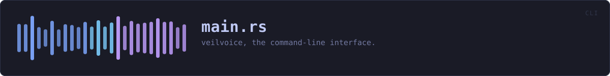

crates/veilvoice-cli/src/main.rs
veilvoice-cli · 2365 lines · read the source here · or on GitHub
veilvoice — the command-line interface.
Everything VeilVoice does, available without a desktop: it runs over SSH, in a container, and on machines that have no GUI toolkit at all. The same engine backs both this and the graphical app.
What is here
Twenty subcommands, and they divide into five groups:
- Audio --
anonymisea file,livescramble a microphone, listdevices,conversationfor a recording with several people in it. - Privacy of the files themselves --
cleanmetadata,encrypt,decrypt,keygen,shred. - Watching the machine --
watchthe microphone and camera,guardVeilVoice's own files against tampering,sentryfor canaries and how fast a folder is changing,capturefor which screen recorders are running. - The app lock --
lock set|status|change|remove, andpolicyfor settings somebody has fixed so the interface cannot turn them off. - Getting it onto the machine --
install,uninstall,companions, andguito open the desktop application.
That last group is a front end over veilvoice_setup, which the desktop application's setup tab also calls. The careful part -- editing PATH -- has one implementation and one set of tests, rather than one per front end.
Two behaviours that surprise people, on purpose
anonymise writes <out>.veil, not a bare WAV. Recordings are encrypted at rest by default. --encrypt=false opts out and requires --yes, because an unsealed recording is the thing somebody later wishes they had not produced. The wiki explains where the WAV went.
The front-ends refuse rather than downgrade. Asked to encrypt with nothing to encrypt with, this exits with an error instead of writing plain audio and mentioning it. Quiet degradation to a weaker posture is the defect class this project has found in itself most often.
Passphrase prompts cannot be piped
rpassword needs a real console; piping a passphrase in blocks on CONIN$ rather than reading it. That is a property of terminal input, not a bug here, and it means anything that prompts cannot be smoke-tested from a non-interactive shell. The layer beneath each prompt is therefore tested instead -- see crate::atrest and crate::lock, where the logic lives precisely so it can be reached without a terminal.
A clap ordering rule worth knowing
An argument declared beside #[command(subcommand)] must precede the subcommand on the command line unless it is marked global = true. So veilvoice lock --path X status parses and veilvoice lock status --path X does not, except that --path is now global specifically so both do.
In plain words
This is VeilVoice without a window.
Everything the program does, typed instead of clicked: disguise a recording, scramble a microphone while you talk, seal a file, strip a photograph's hidden labels, handle a recording with several people in it.
It is the same code underneath, so it works the same way -- over a remote connection, on a machine with no desktop, or from a script that runs it a thousand times.
WHAT THIS FILE CONTAINS
2365 lines defining 21 functions (0 public), 11 types and 0 constants. Everything below is read out of the source, so it cannot disagree with the code.
The types it owns.
struct Cliline 115enum Commandline 121enum ConversationCommandline 534 — What veilvoice conversation can do.enum AppctlCommandline 670 — What veilvoice capture can do.enum InputCommandline 697enum CaptureCommandline 710enum PolicyCommandline 750 — What veilvoice policy can do.enum SentryCommandline 803 — What veilvoice sentry can do.enum CleanPolicyline 864struct Tuningline 1421 — The engine settings a user can reach from the command line.struct AtRestline 1493 — What to do with the result once it exists.
WHAT CALLS WHAT
The functions this file defines, and the calls between them. An edge means the callee's name appears, called, inside the caller's body — a syntactic reading, not a type-resolved one.
The same graph as Mermaid source
%%{init: {"theme":"base","themeVariables":{"background":"#1a1b26","primaryColor":"#1f2335","primaryTextColor":"#c0caf5","primaryBorderColor":"#7aa2f7","secondaryColor":"#16161e","tertiaryColor":"#16161e","lineColor":"#737aa2","textColor":"#c0caf5","mainBkg":"#1f2335","nodeBorder":"#7aa2f7","clusterBkg":"#16161e","clusterBorder":"#2f3549","fontFamily":"ui-monospace, SFMono-Regular, Consolas, monospace","fontSize":"14px"}}}%%
flowchart TD
n_from["Policy::from<br/>line 872"]
n_main["main<br/>line 880"]
n_run["run<br/>line 891"]
n_list_companions["list_companions<br/>line 1281"]
n_offer_line["offer_line<br/>line 1314"]
n_install_companion["install_companion<br/>line 1338"]
n_reseed_range_from["reseed_range_from<br/>line 1440"]
n_config["config<br/>line 1455"]
n_describe_reseed_range["describe_reseed_range<br/>line 1474"]
n_describe_reseed["describe_reseed<br/>line 1484"]
n_anonymise["anonymise<br/>line 1502"]
n_live["live<br/>line 1641"]
n_list_devices["list_devices<br/>line 1861"]
n_clean["clean<br/>line 1893"]
n_encrypt["encrypt<br/>line 1910"]
n_decrypt["decrypt<br/>line 1939"]
n_load_secret_key["load_secret_key<br/>line 1971"]
n_keygen["keygen<br/>line 1979"]
n_watch["watch<br/>line 2055"]
n_shred["shred<br/>line 2145"]
n_info["info<br/>line 2213"]
n_anonymise --> n_config
n_anonymise --> n_describe_reseed_range
n_decrypt --> n_load_secret_key
n_describe_reseed_range --> n_describe_reseed
n_install_companion --> n_offer_line
n_list_companions --> n_offer_line
n_live --> n_config
n_live --> n_describe_reseed_range
n_main --> n_run
n_run --> n_anonymise
n_run --> n_clean
n_run --> n_config
n_run --> n_decrypt
n_run --> n_encrypt
n_run --> n_info
n_run --> n_install_companion
n_run --> n_keygen
n_run --> n_list_companions
n_run --> n_list_devices
n_run --> n_live
n_run --> n_reseed_range_from
n_run --> n_shred
n_run --> n_watch
click n_from href "https://github.com/tilas01/veilvoice/blob/main/crates/veilvoice-cli/src/main.rs#L872" "open the source"
click n_main href "https://github.com/tilas01/veilvoice/blob/main/crates/veilvoice-cli/src/main.rs#L880" "open the source"
click n_run href "https://github.com/tilas01/veilvoice/blob/main/crates/veilvoice-cli/src/main.rs#L891" "open the source"
click n_list_companions href "https://github.com/tilas01/veilvoice/blob/main/crates/veilvoice-cli/src/main.rs#L1281" "open the source"
click n_offer_line href "https://github.com/tilas01/veilvoice/blob/main/crates/veilvoice-cli/src/main.rs#L1314" "open the source"
click n_install_companion href "https://github.com/tilas01/veilvoice/blob/main/crates/veilvoice-cli/src/main.rs#L1338" "open the source"
click n_reseed_range_from href "https://github.com/tilas01/veilvoice/blob/main/crates/veilvoice-cli/src/main.rs#L1440" "open the source"
click n_config href "https://github.com/tilas01/veilvoice/blob/main/crates/veilvoice-cli/src/main.rs#L1455" "open the source"
click n_describe_reseed_range href "https://github.com/tilas01/veilvoice/blob/main/crates/veilvoice-cli/src/main.rs#L1474" "open the source"
click n_describe_reseed href "https://github.com/tilas01/veilvoice/blob/main/crates/veilvoice-cli/src/main.rs#L1484" "open the source"
click n_anonymise href "https://github.com/tilas01/veilvoice/blob/main/crates/veilvoice-cli/src/main.rs#L1502" "open the source"
click n_live href "https://github.com/tilas01/veilvoice/blob/main/crates/veilvoice-cli/src/main.rs#L1641" "open the source"
click n_list_devices href "https://github.com/tilas01/veilvoice/blob/main/crates/veilvoice-cli/src/main.rs#L1861" "open the source"
click n_clean href "https://github.com/tilas01/veilvoice/blob/main/crates/veilvoice-cli/src/main.rs#L1893" "open the source"
click n_encrypt href "https://github.com/tilas01/veilvoice/blob/main/crates/veilvoice-cli/src/main.rs#L1910" "open the source"
click n_decrypt href "https://github.com/tilas01/veilvoice/blob/main/crates/veilvoice-cli/src/main.rs#L1939" "open the source"
click n_load_secret_key href "https://github.com/tilas01/veilvoice/blob/main/crates/veilvoice-cli/src/main.rs#L1971" "open the source"
click n_keygen href "https://github.com/tilas01/veilvoice/blob/main/crates/veilvoice-cli/src/main.rs#L1979" "open the source"
click n_watch href "https://github.com/tilas01/veilvoice/blob/main/crates/veilvoice-cli/src/main.rs#L2055" "open the source"
click n_shred href "https://github.com/tilas01/veilvoice/blob/main/crates/veilvoice-cli/src/main.rs#L2145" "open the source"
click n_info href "https://github.com/tilas01/veilvoice/blob/main/crates/veilvoice-cli/src/main.rs#L2213" "open the source"
classDef helper fill:#1f2335,stroke:#bb9af7,color:#c0caf5
class n_from,n_main,n_run,n_list_companions,n_offer_line,n_install_companion,n_reseed_range_from,n_config,n_describe_reseed_range,n_describe_reseed,n_anonymise,n_live,n_list_devices,n_clean,n_encrypt,n_decrypt,n_load_secret_key,n_keygen,n_watch,n_shred,n_info helperThis site loads no third-party script, so it cannot run Mermaid; the diagram above is the same nodes and edges drawn by the generator instead. GitHub renders the source below directly.
ITEMS
| Item | Line | Documentation |
|---|---|---|
Cli struct | 115 | |
Command enum | 121 | |
ConversationCommand enum | 534 | What veilvoice conversation can do. |
AppctlCommand enum | 670 | What veilvoice capture can do. |
InputCommand enum | 697 | |
CaptureCommand enum | 710 | |
PolicyCommand enum | 750 | What veilvoice policy can do. |
SentryCommand enum | 803 | What veilvoice sentry can do. |
CleanPolicy enum | 864 | |
Policy::from fn | 872 | |
main fn | 880 | |
run fn | 891 | |
list_companions fn | 1281 | Report every companion that means anything on this platform. |
offer_line fn | 1314 | One line describing what VeilVoice can do about a missing companion. |
install_companion fn | 1338 | Act on one named companion. |
Tuning struct | 1421 | The engine settings a user can reach from the command line. |
reseed_range_from fn | 1440 | Turn --reseed-range into a range, or into the reason it was not one. |
config fn | 1455 | |
describe_reseed_range fn | 1474 | How a randomised roll range reads in the output. |
describe_reseed fn | 1484 | How the seed-rolling setting reads in the output. |
AtRest struct | 1493 | What to do with the result once it exists. |
anonymise fn | 1502 | |
live fn | 1641 | |
list_devices fn | 1861 | |
clean fn | 1893 | |
encrypt fn | 1910 | |
decrypt fn | 1939 | |
load_secret_key fn | 1971 | Load a private key file, which is itself a password-locked container. |
keygen fn | 1979 | |
watch fn | 2055 | Report, and keep reporting, what is using the microphone and camera. |
shred fn | 2145 | Destroy a file's contents, then delete it. |
info fn | 2213 |